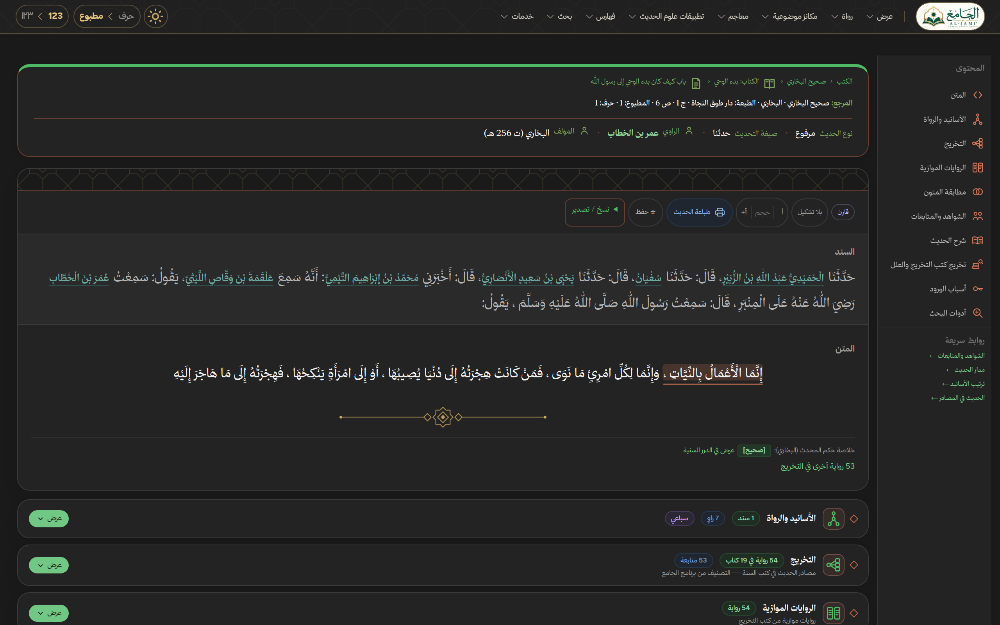
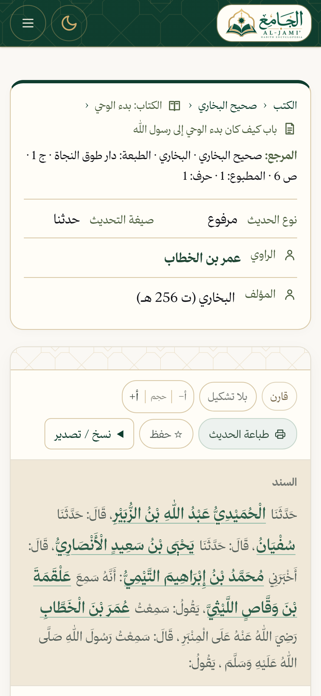

<!DOCTYPE html>
<html lang="ar" dir="rtl">
<head>
<meta charset="UTF-8">
<title>الجامع · الفيلم الترويجي</title>
<link rel="stylesheet" href="../features/base.css">
<style>
  /* Promo film (1920×1080): quick glances at the site's features, each a real screenshot of the site
     (shots/, from capture.mjs) panned and zoomed inside a browser window. */
  #stage { width: 1920px; height: 1080px; color: #faf6ec;
    background: radial-gradient(ellipse 80% 90% at 70% 40%, #235238 0%, #163826 55%, #0c2014 100%); }
  .pattern { opacity: .07; filter: invert(1) sepia(1) saturate(3) hue-rotate(5deg); }
  .glow { position: absolute; width: 1400px; height: 1400px; border-radius: 50%; left: -300px; top: -500px;
    background: radial-gradient(circle, rgba(201,164,92,.16), transparent 60%); pointer-events: none; }

  .sc { position: absolute; inset: 0; }
  .num { position: absolute; font-family: 'Amiri', serif; font-size: 44px; font-weight: 700; color: var(--gold); display: flex; align-items: center; gap: 18px; }
  .num::after { content: ''; width: 90px; height: 2px; background: var(--gold); opacity: .7; }
  .ttl { position: absolute; font-family: 'Amiri', serif; font-weight: 700; font-size: 100px; line-height: 1.25; color: #fffaf0; white-space: nowrap; }
  .sub { position: absolute; font-size: 34px; line-height: 1.6; color: #cfe0d4; font-weight: 400; }
  .sub b { color: var(--gold); font-weight: 600; }
  /* title column: right of the window (window on the left), or left of it (.flip) */
  .sc .num, .sc .ttl, .sc .sub { right: 90px; width: 580px; }
  .sc.flip .num, .sc.flip .ttl, .sc.flip .sub { right: auto; left: 90px; }
  .sc .num { top: 330px; } .sc .ttl { top: 390px; } .sc .sub { top: 560px; }

  .win { position: absolute; top: 170px; left: 90px; width: 1120px; height: 740px; border-radius: 22px; overflow: hidden;
    background: #fffdf7; box-shadow: 0 40px 90px rgba(0,0,0,.45), 0 0 0 1px rgba(255,255,255,.08); }
  .flip .win { left: auto; right: 90px; }
  .bar { height: 46px; background: #efe9da; display: flex; align-items: center; gap: 10px; padding: 0 18px; direction: ltr; }
  .bar i { width: 13px; height: 13px; border-radius: 50%; background: #d6ccb4; display: inline-block; }
  .bar i:nth-child(1) { background: #e0796a; } .bar i:nth-child(2) { background: #e5bf5c; } .bar i:nth-child(3) { background: #7dbb73; }
  .bar span { margin-left: 18px; flex: 1; max-width: 560px; background: #fffdf7; border-radius: 999px; padding: 5px 18px; font: 500 17px 'JetBrains Mono', monospace; color: #5b6b60; }
  .vp { position: relative; width: 1120px; height: 694px; overflow: hidden; background: #fffdf7; }
  .vp img { position: absolute; left: 0; top: 0; transform-origin: 0 0; }

  .center { position: absolute; left: 0; right: 0; text-align: center; }
  .big { font-family: 'Amiri', serif; font-weight: 700; color: var(--gold); font-size: 230px; line-height: 1; }
  .lbl { font-family: 'Amiri', serif; font-weight: 700; font-size: 84px; color: #fffaf0; }
  .stat { display: inline-block; margin: 0 22px; padding: 16px 40px; border-radius: 999px; border: 2px solid rgba(201,164,92,.6); font-size: 44px; font-weight: 600; color: #fffaf0; }
  .stat b { color: var(--gold); font-family: 'Amiri', serif; font-size: 54px; margin-left: 12px; }
  .plate { display: inline-block; background: #faf6ec; border-radius: 34px; padding: 26px 60px; box-shadow: 0 30px 70px rgba(0,0,0,.35); }
  .plate img { height: 170px; display: block; }
  .pill { background: transparent; border-color: rgba(201,164,92,.7); color: var(--gold); font-size: 34px; padding: 10px 34px; }
  .url { font-family: 'JetBrains Mono', monospace; direction: ltr; font-size: 124px; font-weight: 600; color: #fffaf0; letter-spacing: -2px; }
  .url span { color: var(--gold); }

  /* montage */
  .mini { position: absolute; width: 520px; height: 350px; border-radius: 16px; overflow: hidden; background: #fffdf7; box-shadow: 0 26px 60px rgba(0,0,0,.45); }
  .mini img { width: 520px; display: block; }
  .mini em { position: absolute; bottom: 16px; right: 16px; font-style: normal; background: var(--green); color: #fffaf0; font-size: 28px; font-weight: 600; padding: 6px 22px; border-radius: 999px; box-shadow: 0 6px 16px rgba(0,0,0,.3); }

  /* devices */
  .phone { position: absolute; top: 150px; left: 1380px; width: 380px; height: 800px; border-radius: 56px; background: #0b0f0c; padding: 16px; box-shadow: 0 40px 90px rgba(0,0,0,.5); }
  .phone .scr { width: 348px; height: 768px; border-radius: 42px; overflow: hidden; background: #fffdf7; }
  .phone img { width: 348px; display: block; }
</style>
</head>
<body>
<div id="stage">
  <div class="pattern"></div>
  <div class="glow"></div>
</div>

<script>
const FILM = {
  bounds: [0, 4.5, 8, 11.5, 15, 18.5, 22, 25.5, 29, 32.5, 36, 40.5, 44, 47.5, 52],
  lengths: [7.81,5.45,5.03,4.61,5.15,4.45,4.64,4.95,4.5,3.71,6.03,4.89,5.39,4.66], // @narration-timing
}
</script>
<script src="../features/engine.js"></script>
<script>
const B = FILM.bounds
const stage = $('stage')
const LOGO = '../../public/assets/brand/al-jami-horizontal.png'
const ar = n => Math.round(n).toLocaleString('ar-EG')
const add = (parent, html) => { const t = document.createElement('template'); t.innerHTML = html.trim(); const el = t.content.firstChild; parent.appendChild(el); return el }

// Screenshot sizes in CSS px (the shots are taken at 2× — the phone at 3×)
const SHOT = {
  hadith: [1280, 800], narrator: [1280, 800], search: [1280, 800], books: [1280, 800], narrators: [1280, 800],
  lexicon: [1280, 800], quran: [1280, 800], topics: [1280, 800], dark: [1280, 800],
  'isnad-tree': [1089, 724], takhrij: [1089, 607], variants: [1089, 900], aqwal: [1089, 439], tarf: [900, 260], phone: [390, 844],
}
const VW = 1120, VH = 694
// The transform that shows `rect` ([x, y, w, h] in the shot) as large as fits, centred, without
// showing past the shot's edges where it can be avoided
function focus(shot, [rx, ry, rw, rh], zoom = 1) {
  const [iw, ih] = SHOT[shot]
  const s = Math.min(VW / rw, VH / rh) * zoom
  const clamp = (v, full, view) => full * s <= view ? (view - full * s) / 2 : Math.min(0, Math.max(view - full * s, v))
  return { s, x: clamp(VW / 2 - s * (rx + rw / 2), iw, VW), y: clamp(VH / 2 - s * (ry + rh / 2), ih, VH) }
}

// A feature scene: number, title, subtitle, and a browser window panning from one part of a shot to another
let featureNo = 0
function feature(i, { shot, url, title, sub, from, to, flip = false }) {
  const a = B[i], b = B[i + 1]
  const n = ++featureNo
  const sc = add(stage, `<div class="sc${flip ? ' flip' : ''}" id="s${i}">
    <div class="num el">${ar(n).padStart(2, '٠')}</div>
    <div class="ttl el">${title}</div>
    <div class="sub el">${sub}</div>
    <div class="win el"><div class="bar"><i></i><i></i><i></i><span>hadith.dev${url}</span></div>
      <div class="vp"></div></div>
  </div>`)
  const [num, ttl, subEl, win] = sc.children
  const img = win.querySelector('img')
  scene(sc, a, b - .45)
  const dx = flip ? -170 : 170
  tw(win, a, .75, { o: 0, x: dx, s: .92 }, { o: 1, x: 0, s: 1 })
  tw(num, a + .1, .5, { o: 0, y: 24 }, { o: 1, y: 0 })
  tw(ttl, a + .18, .6, { o: 0, y: 50 }, { o: 1, y: 0 })
  tw(subEl, a + .45, .6, { o: 0, y: 26 }, { o: 1, y: 0 })
  const f0 = focus(shot, ...[].concat([from[0]], from[1] ?? [])), f1 = focus(shot, ...[].concat([to[0]], to[1] ?? []))
  tw(img, a, 0, f0, f0)
  tw(img, a + .35, (b - .9) - (a + .35), f0, f1, 'inOut')
  tw(win, b - .6, .5, { o: 1, x: 0, s: 1 }, { o: 1, x: 0, s: 1.03 }, 'inOut')
}

/* 0 · the numbers */
{
  const a = B[0], b = B[1]
  const sc = add(stage, `<div class="sc" id="s0">
    <div class="center big el" style="top:250px" id="cnt">٠</div>
    <div class="center lbl el" style="top:500px">حديثٍ نبويٍّ</div>
    <div class="center el" style="top:680px"><span class="stat"><b>${ar(245)}</b>كتابًا</span><span class="stat"><b>${ar(30087)}</b>راويًا</span></div>
  </div>`)
  const [cnt, lbl, stats] = sc.children
  scene(sc, a, b - .45)
  tw(cnt, a + .1, .5, { o: 0, s: .8 }, { o: 1, s: 1 }, 'back')
  tw(lbl, a + .5, .6, { o: 0, y: 30 }, { o: 1, y: 0 })
  tw(stats, a + 2.1, .6, { o: 0, y: 30 }, { o: 1, y: 0 })
  hooks.push(t => { const q = Math.min(1, Math.max(0, (t - a - .1) / 2)); cnt.textContent = ar(339607 * ease.out(q)) })
}

/* 1 · the name */
{
  const a = B[1], b = B[2]
  const sc = add(stage, `<div class="sc" id="s1">
    <div class="center el" style="top:250px"><span class="plate"></span></div>
    <div class="center lbl el" style="top:540px">موسوعة الحديث النبوي الشريف</div>
    <div class="center el" style="top:700px"><span class="pill">الآن على الويب</span></div>
  </div>`)
  const [logo, name, pill] = sc.children
  scene(sc, a, b - .45)
  tw(logo, a + .05, .7, { o: 0, s: .75 }, { o: 1, s: 1 }, 'back')
  tw(name, a + .4, .6, { o: 0, y: 40 }, { o: 1, y: 0 })
  tw(pill, a + .9, .5, { o: 0, s: .8 }, { o: 1, s: 1 }, 'back')
}

/* 2–9 · the hadith page, feature by feature */
feature(2, { shot: 'hadith', url: '/hadith/5', title: 'السند والمتن', sub: 'كل حديثٍ بسنده ومتنه،<br>مشكولًا كما في أصله',
  from: [[0, 0, 1280, 800]], to: [[30, 320, 1080, 260]] })
feature(3, { shot: 'narrator', url: '/narrator/4677', title: 'الرواة', sub: 'ترجمة كل راوٍ ومرتبته —<br><b>' + ar(30087) + '</b> راويًا', flip: true,
  from: [[0, 0, 1280, 800]], to: [[250, 60, 860, 520]] })
feature(4, { shot: 'isnad-tree', url: '/hadith/5#isnad', title: 'شجرة الإسناد', sub: 'كل طرق الحديث في شجرةٍ واحدة،<br>ومدارُه ظاهرٌ فيها',
  from: [[0, 100, 1089, 420]], to: [[320, 290, 330, 210]] })
feature(5, { shot: 'takhrij', url: '/hadith/5#takhrij', title: 'التخريج', sub: '<b>' + ar(54) + '</b> روايةً في <b>' + ar(19) + '</b> كتابًا —<br>في ثوانٍ', flip: true,
  from: [[0, 0, 1089, 607]], to: [[0, 0, 1089, 330]] })
feature(6, { shot: 'variants', url: '/hadith/5#variants', title: 'الروايات الموازية', sub: 'فروق الألفاظ بين الروايات،<br>ملوّنةً كلمةً كلمة',
  from: [[0, 60, 1089, 180]], to: [[300, 320, 500, 330]] })
feature(7, { shot: 'aqwal', url: '/hadith/94983#aqwal', title: 'أقوال العلماء', sub: 'وأحكام المحدّثين،<br>من الدرر السنية', flip: true,
  from: [[0, 0, 1089, 439]], to: [[420, 0, 669, 300]] })
feature(8, { shot: 'tarf', url: '/hadith/94983', title: 'طرف الحديث', sub: 'مُعلَّمًا في متنه،<br>ويقودك إلى رواياته',
  from: [[0, 0, 900, 260]], to: [[380, 0, 520, 150]] })
feature(9, { shot: 'search', url: '/search', title: 'البحث', sub: 'بالتشكيل أو بدونه،<br>في المتون والأسانيد', flip: true,
  from: [[0, 90, 1280, 260]], to: [[500, 300, 780, 400]] })

/* 10 · montage */
{
  const a = B[10], b = B[11]
  const items = [['books', 'الكتب', 1290, 120, 2], ['narrators', 'الرواة', 700, 100, -1.5], ['lexicon', 'غريب الحديث', 110, 130, 2.5],
                 ['quran', 'القرآن الكريم', 1000, 570, -2], ['topics', 'الفهارس الموضوعية', 400, 580, 1.5]]
  const sc = add(stage, `<div class="sc" id="s10">${items.map(([s, l, x, y, r]) =>
    `<div class="mini el" style="left:${x}px;top:${y}px"><em>${l}</em></div>`).join('')}</div>`)
  scene(sc, a, b - .45)
  ;[...sc.children].forEach((m, i) => {
    const r = items[i][4]
    tw(m, a + .1 + i * .5, .6, { o: 0, y: 80, s: .85, r: 0 }, { o: 1, y: 0, s: 1, r }, 'back')
    tw(m, b - .9, .4, { o: 1, y: 0, s: 1, r }, { o: 1, y: 0, s: 1.02, r }, 'inOut')
  })
}

/* 11 · numbering */
feature(11, { shot: 'hadith', url: '/hadith/5', title: 'حرف أو مطبوع', sub: 'عزوٌ دقيق بالترقيم الذي تعرفه،<br>بنقرةٍ واحدة',
  from: [[0, 0, 480, 120]], to: [[520, 60, 600, 160]] })

/* 12 · light and dark, desk and pocket */
{
  const a = B[12], b = B[13]
  const sc = add(stage, `<div class="sc" id="s12">
    <div class="win el" style="left:120px;top:150px;width:1150px;height:760px"><div class="bar"><i></i><i></i><i></i><span>hadith.dev/hadith/5</span></div>
      <div class="vp" style="width:1150px;height:714px"></div></div>
    <div class="phone el"><div class="scr"></div></div>
    <div class="center sub el" style="top:960px;right:0;width:auto;color:#fffaf0;font-size:40px">نهارًا وليلًا · على مكتبك وفي جيبك</div>
  </div>`)
  const [win, phone, cap] = sc.children
  scene(sc, a, b - .45)
  tw(win, a, .75, { o: 0, x: -150, s: .92 }, { o: 1, x: 0, s: 1 })
  tw(phone, a + .35, .8, { o: 0, y: 160 }, { o: 1, y: 0 }, 'back')
  tw(cap, a + .8, .6, { o: 0, y: 20 }, { o: 1, y: 0 })
  tw(phone.querySelector('img'), a + 1.2, (b - .9) - (a + 1.2), { y: 0 }, { y: -260 }, 'inOut')
}

/* 13 · the address */
{
  const a = B[13]
  const sc = add(stage, `<div class="sc" id="s13">
    <div class="center el" style="top:210px"><span class="plate"></span></div>
    <div class="center url el" style="top:480px">hadith<span>.</span>dev</div>
    <div class="center lbl el" style="top:680px;font-size:64px">موسوعة الحديث النبوي الشريف</div>
  </div>`)
  const [logo, url, name] = sc.children
  scene(sc, a, null)
  tw(logo, a + .05, .7, { o: 0, s: .8 }, { o: 1, s: 1 }, 'back')
  tw(url, a + .45, .7, { o: 0, y: 40 }, { o: 1, y: 0 })
  tw(name, a + .9, .6, { o: 0, y: 30 }, { o: 1, y: 0 })
}

startFilm()
</script>
</body>
</html>
